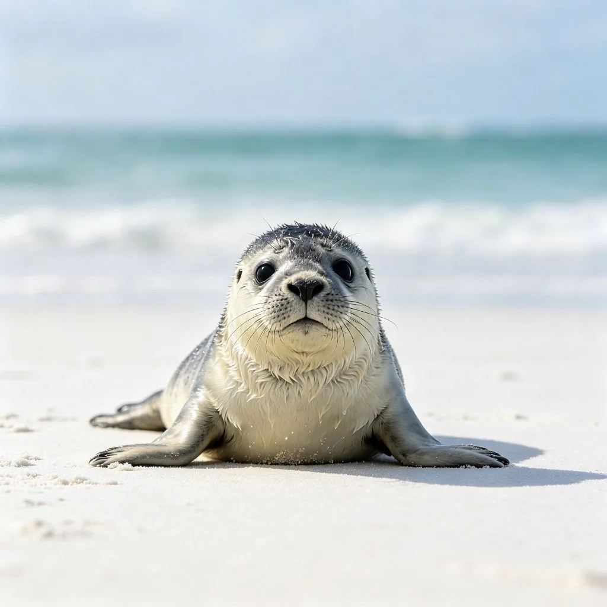

在澳洲東部的一條清澈小溪中，一個奇怪的生物正在水中覓食。牠有著鴨子一樣的扁嘴、河狸一樣的扁平尾巴、水獺一樣的帶蹼腳，全身覆蓋著濃密的棕色毛髮。牠在水中靈活地游來游去，不時把嘴伸進溪底的泥沙中尋找食物。這個生物就是鴨嘴獸——地球上最奇怪、最獨特的動物之一。當歐洲科學家在1798年第一次看到鴨嘴獸的標本時，很多人以為這是一個惡作劇——有人把鴨子的嘴縫到了一隻河狸身上。但經過仔細檢查，科學家們不得不承認，這是一種真實存在的、前所未見的動物。
哺乳動物？會下蛋？
鴨嘴獸最令人驚奇的特徵是：牠是一種會下蛋的哺乳動物。在動物分類學中，哺乳動物的定義特徵包括胎生、哺乳和有毛髮。但鴨嘴獸（以及針鼴）打破了這個規則——牠們屬於哺乳動物中的單孔目（Monotremata），是唯一一類會下蛋的哺乳動物。
鴨嘴獸的繁殖方式非常獨特。雌性鴨嘴獸在交配後大約21天會產下1-3顆皮革質的蛋（類似爬行動物的蛋，而不是鳥類的硬殼蛋），然後把蛋放在腹部的育兒袋中孵化。大約10天後，小鴨嘴獸破殼而出，此時牠們只有豆子大小，眼睛看不見，完全依賴母親。母親沒有乳頭，但乳腺會分泌乳汁，滲透到腹部的皮膚上，小鴨嘴獸就舔食皮膚上的乳汁。大約4個月後，小鴨嘴獸就可以離開巢穴獨立生活了。

科學家認為，單孔目動物是哺乳動物中最原始的一支，大約在2億年前就與其他哺乳動物分道揚鑣。牠們保留了很多爬行動物祖先的特徵，如下蛋、單一的排泄和生殖孔（單孔目的名稱由此而來）、以及較低的體溫調節能力。但同時，牠們也有著哺乳動物的特徵，如有毛髮、哺乳、和三塊聽小骨。鴨嘴獸就像是一個「活化石」，見證了哺乳動物從爬行動物演化而來的漫長歷程。
鴨嘴獸的第六感：電磁感應
除了會下蛋，鴨嘴獸還有另一個令人驚嘆的能力：電磁感應。鴨嘴獸的嘴上有大約40000個電感受器，可以感知其他動物肌肉收縮時產生的微弱電場。這讓鴨嘴獸可以在完全黑暗、渾濁的水中，不用視覺和嗅覺，就能精確地定位獵物。
當鴨嘴獸在水中覓食時，牠會閉上眼睛、耳朵和鼻子，完全依賴嘴上的電感受器和機械感受器（感知觸覺和水流）。牠會把嘴伸進溪底的泥沙中，左右擺動頭部，掃描周圍的電場。當一隻蝦或蠕蟲動一下肌肉，就會產生微弱的電流，鴨嘴獸可以在幾公分之外感知到，然後迅速準確地抓住獵物。這種電磁感應能力在哺乳動物中是非常罕見的——除了鴨嘴獸和針鼴，只有某些魚類（如鯊魚和鰩魚）和兩棲動物有類似的能力。

雄性鴨嘴獸有毒
雄性鴨嘴獸的後腳上有一根毒刺，可以分泌毒液。這在哺乳動物中是非常罕見的（只有少數幾種哺乳動物有毒，如溝齒鼩和懶猴）。鴨嘴獸的毒液對人類來說不致命，但會引起極度的疼痛和腫脹，有時疼痛可以持續數週甚至數月。科學家認為，雄性鴨嘴獸的毒刺主要用於繁殖季節的雄性之間的打鬥，以及防禦天敵。有趣的是，鴨嘴獸的毒液中含有一種類似胰島素的荷爾蒙，可以降低血糖，科學家正在研究這種物質是否可以用於治療糖尿病。
溪邊的鴨嘴獸，用牠古怪的外表和神奇的能力，向我們展示了生命演化的無限可能。有時候，大自然的發明遠遠超出人類的想像——一隻有著鴨嘴、會下蛋、能感應電場、還有毒刺的哺乳動物，聽起來就像是科幻小說中的生物，但牠確實在澳洲的溪流中生活了數千萬年。或許鴨嘴獸的存在就是在提醒我們：這個世界上還有太多我們不了解的奇蹟，而保持好奇和謙卑，是人類面對自然時應有的態度。